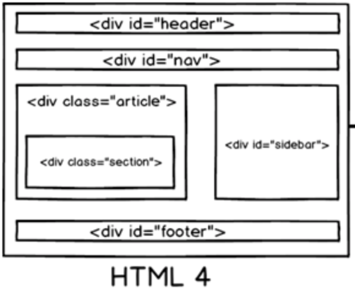

1999 - HTML4.01 wordt standaard
Nadat de HTML-versie 4.01 in 1999 standaard werd, publiceerde het World Wide Web Consortium XHTML 1.0. Deze opnieuw geformuleerde HTML volgens de regels van het XML-gegevensformaat. Hoewel HTML hoofdletters of kleine tagnamen en -attributen kan bevatten, vereist XML dat deze allemaal kleine letters zijn. Er waren enkele andere verschillen: alle attributen moesten worden geciteerd, en afzonderlijke elementen zoals IMG of BR vereisten een sluitende schuine streep.
